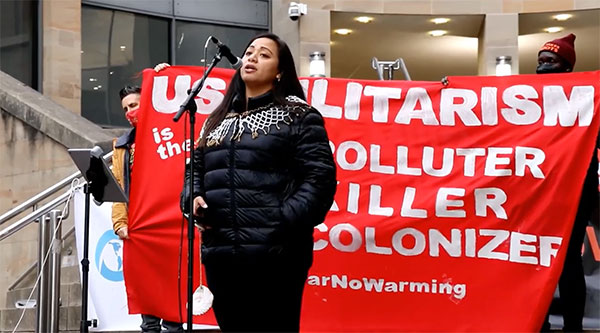

Playthrough Summary
You chose to colonize lands as unincorporated territories of the United States. Regardless of your actions or convictions within this satirical simulation, the reality is that all six have been victims of American imperialism.
American Samoa
The Samoan islands have been victims of colonization since the late 1800s when warring imperial powers eventually resolved their conflict by forcibly ceding the eastern islands to America and the western islands to Germany. The western islands eventually gained independence in 1962, but the U.S. territory continues to be denied autonomy (Higgins).
About 90% of the inhabitants of American Samoa are indigenous Samoan, all of whom are legally considered U.S. nationals rather than citizens (Youngwood). Holding a second-class status within America's legal system bars an American Samoan from voting but does not keep them from joining the U.S. military (Olivera, et al.). In fact, American Samoa has the highest per-capita military participation rate out of any U.S. territory or state (Youngwood).
Interestingly, American Samoa's exclusion from the rights and protections afforded citizens has allowed the people to govern themselves through a hybrid law system that blends a Western legal framework with communal land ownership and the indigenous matai system depending upon chief leadership. This dynamic has allowed Native culture and practices to thrive in American Samoa like no where else in U.S. lands (Youngwood).
However, this system is far from perfect. Three American Samoans living in Utah fought for birthright citizenship and lost, though they tried to get their case, Fitisemanu v. United States, heard by the Supreme Court. This appeal was recently denied, reenforcing citizenship discrimination against American Samoans (Higgins).
Works Cited:
- Higgins, Ashton. "Decolonizing America: American Samoa." Brown Political Review. November 6, 2022.
- Olivera, Gabriela Meléndez and Cepeda Derieux, Adriel. ""Nationals" but not "Citizens": How the U.S. Denies Citizenship to American Samoans." ACLU. August 6, 2021.
- Staff Consortium. "Case That Sees Dept. of Justice Denying Birthright Citizenship in U.S. Territories Likely to be Appealed to Supreme Court." The Virgin Islands Consortium. September 24, 2020.
- Youngwood, Ben. "American Samoa: Can the Home of the Brave Help More Lands Be Free?" Brown Political Review. April 6, 2022.
Guam
Guam was one of several trophies America brought home from the Spanish-American War in 1898. Three years later, the Insular Case rulings by the Supreme Court legalized the U.S. Navy's control of Guam. The Chamorros were racially segregated, forced to speak English rather than their native language, and heavily taxed, often to the point of losing their lands. After Japan took Guam in 1941, the Chamorros were horribly abused and murdered by the Japanese until they were finally made to feel safe by the United States on their supposed Liberation Day in 1944. Soon after reclaiming Guam, the U.S. gobbled up the land at unfair prices for military use, eventually occupying "between a third and a half" of the island (Gelardi).
The high and ongoing militarization in Guam is threatening the natural environment and the health of its residents. At great risk in particular is the Northern Guam Lens Aquifer, which supplies 80% of Guam's drinking water and is in danger of being poisoned by the continued military construction. The U.S. military's actions are direct violations of international law and the Chamorro people's self-determination (Naputi).
Work is being done to decolonize Guam and the self-determination movement is ongoing, but major action ultimately depends on the U.S. Congress. Yet hope remains strong as the Chamorro people continue to fight for independence and self-determination (UNPO). There is demand within Guam for reconnection to culture as a resurgence of Guam's indigenous language, CHamoru, is taking place. Virtual CHamoru classes over Zoom are becoming wildly popular, and bills changing the names of six villages to their CHamoru spellings have been passed (Wen).
Works Cited:
- Gelardi, Chris. "Guam: Resisting Empire at the "Tip of the Spear."" The Nation. November 2, 2021.
- Naputi, Tiara. "Decolonization for Guam still matters." Pacific Island Times. January 27, 2022.
- UNPO. "Guam : Commission on Decolonization Creates a Self-Determination Study For the CHamoru Self-Determination Movement." The Unrepresented Nations and Peoples Organization. February 7, 2022.
- Wen, Anne. "'It restores my soul': pandemic offers unexpected boon to Guam indigenous language learners." The Guardian. September 15, 2021.
Northern Mariana Islands
Germany bought the Northern Mariana Islands in 1899, though only 20 years later, the League of Nations gave the territory to Japan as part of the South Pacific Mandate. In 1944, the U.S. invasion of the Northern Mariana Islands and Guam allowed America to take control of both (Pacific RISA).
Today, the Mariana Islands are highly militarized and facing issues similar to that of Guam. According to Rep. Sheila Babauta, an indigenous islander of Saipan in the Mariana Islands, military pollution and land desecration as well as climate change have drastically hurt her home land (Obama Foundation). "The military buildup is happening, our shorelines are receding, and colonialism has been in the Marianas for over 500 years. We can see that in our culture, in the way our people think, and even speak our language. Our culture has been lost due to colonialism," she shared (Maurin).
Babauta is bringing awareness towards the Mariana Islands' issues and fighting for Mariana Island decolonization. She is excited and supportive of youth involvement in climate change discussions, saying "they are passionate about implementing solutions that will protect our Motherland for future generations to come" and urging the community to embrace their passion (Maurin).
Works Cited:
Puerto Rico
Puerto Rico, one of the territories acquired via the Spanish-American War, has been fighting for its independence since at least World War I. The U.S. only allowed Puerto Ricans second-class citizenship in 1917 as an appeasement measure to keep Puerto Rico from revolting during the war and to encourage enlistment. President Woodrow Wilson appeared to present Puerto Rico independence as a post-war possibility, but to the disappointment of many who fought, this supposed promise was not followed through (Davies).
Puerto Ricans have been subject to horrific abuse, oppression, and dehumanization throughout their existence as second-class Americans. In the 1930s, American doctor Cornelius Rhoads, sent to Puerto Rico to study anemia, referred to the native people as "experimental animals." He conducted experiments from refusing to provide patients with treatment to inducing cancer simply to record what would happen. In a letter to a collegue, he wrote that the "best thing" for Puerto Rico would be to "exterminate the population." Through government destruction of evidence, Rhoads eventually becomes the chief medical officer in the Chemical Warfare Service, performs more horrific experiments on Puerto Ricans from an island near Panama, and is praised as a forefather of chemotherapy throughout the U.S. medical community (Davies).
In Puerto Rico, the actions of Cornelius Rhoads spurred the nationalist movement that continues on today. A bill recently introduced in the U.S. House Committee on Natural Resources, the Puerto Rico Status Act, if passed, would require a Puerto Rican vote that would change Puerto Rico's relationiship with the U.S. on their own terms. With statehood mentioned as an option to full independence within this bill, there is speculation the bill will die in the Senate. However, the existence of this bill sets a precident for future bills and brings Puerto Rico one step closer to independence (Hernández).
Works Cited:
- Berkfield, Angela. "Art, Decolonization, and Action for Puerto Rico." Parenting 4 Social Justice. July 27, 2018.
- Davies, Dave. "The History Of American Imperialism, From Bloody Conquest To Bird Poop." NPR. February 18, 2019.
- Hernández, Javier. "Decolonizing Puerto Rico." Mano Magazine. July 18, 2022.
Virgin Islands
The U.S. began negotiations with Denmark regarding the purchase of the Danish West Indies, colonies dedicated to plantations for products such as sugar that ran on African slave labor, in 1865, a process which lasted for over 50 years. A treaty was finally settled during President Woodrow Wilson's administration in 1917 that allowed for the purchase of the Danish West Indies, which are now the Virgin Islands. It wasn't until 1970 that natives of the Virgin Islands won the right to vote for their governor, but still today, unincorporated territories of the United States cannot vote for members of Congress or the President (Little).
There is a push for decolonization of the Virgin Islands, though not many are talking about it. Hadiya Sewer, a native of St. John in the Virgin Islands who researches racism and colonialism, questions the ethicality of U.S. territory second-class citizenship, "If Americans cannot be possessions of other Americans, how can we define residents of American territories? I cannot vote for the President of the U.S. while residing at home. However, the American president has the right to send members of the territory to fight for the nation." Sewer understands the stakes and urges for decolonization as well as understanding colonism's contribution to racism.
Works Cited:
- Little, Becky. "The U.S. Bought 3 Virgin Islands from Denmark. The Deal Took 50 Years." A&E Television Networks. August 21, 2019.
- Sewer, Hadiya. "Notes On Being a Demonic Black Radical Feminist Killjoy From St. John, U.S. Virgin Islands." Moko Magazine.
- Weare, Neil. "Represent the U.S. Virgin Islands & Right to Vote on Constitution Day." Equally American. September 17, 2014.
Philippines
The Philippines is the only U.S. territory of the six discussed on this page that has successfully gained independence. The Filipino people refused to be a prize of the Spanish-American War, and launched a two year war against the U.S. soon after they were declared a U.S. colony. The Philippine-American War was brought to an end by the capture of the Philippine Republic's elected President, General Emilio Aguinaldo. However, the Philippines continued to campaign for independence and fight against American rule until the Philippine Autonomy Act of 1916 was passed, which promised independence if the Filipino people could prove the ability to govern themselves (Ricardo).
")
It wasn't until 1946, after much pain and difficulty, that the Philippines finally gained their independence. The decolonization movement is ongoing, with Filipino people preserving their language through song (Natividad) and restoring stolen collections of Filipino artifacts (Punzalan). The Philippines is a prime example of the continual effort needed for decolonization and an inspiration for territories fighting for independence.
Works Cited:
- Natividad, Ivan. "How preserving a country's languages can lead to decolonization." Berkley University of California. May 25, 2022.
- Punzalan, Ricky. "UMSI faculty leads a project to decolonize U-M Philippine collections." University of Michigan. April 5, 2022.
- Ricardo, Jose. "July 4, 1946: The Philippines Gained Independence from the United States." National WWII Museum in New Orleans. July 2, 2021.
Thank you
Thank you for using this application and learning more about decolonial futures.